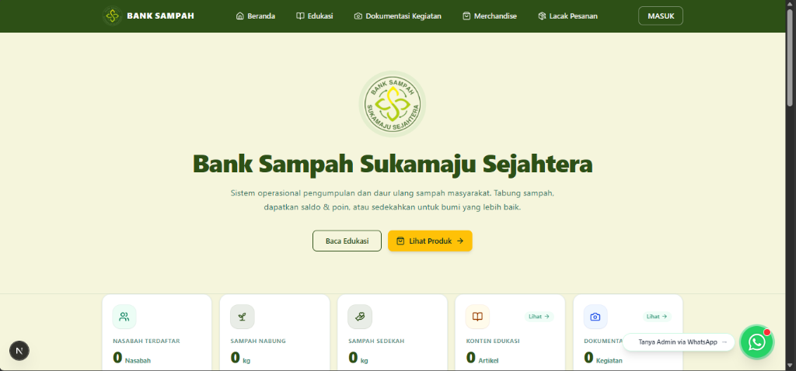

Live Website
01
Undergraduate Thesis
07.2026 – 09.2026 · Group Project
Sukamaju Sejahtera Waste Bank Website
Integrated web application to manage waste deposits, customer balances, cooperative savings & loans, product sales with Midtrans payments, and operational reporting.
Next.js
TypeScript
Prisma & MySQL